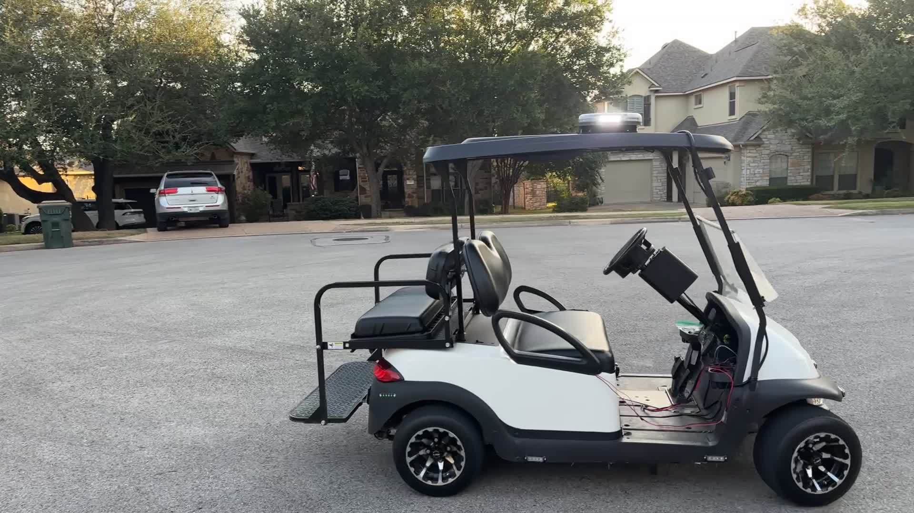
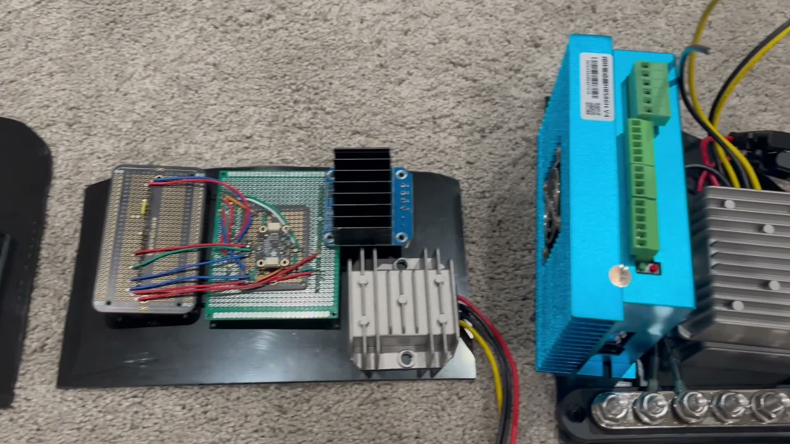
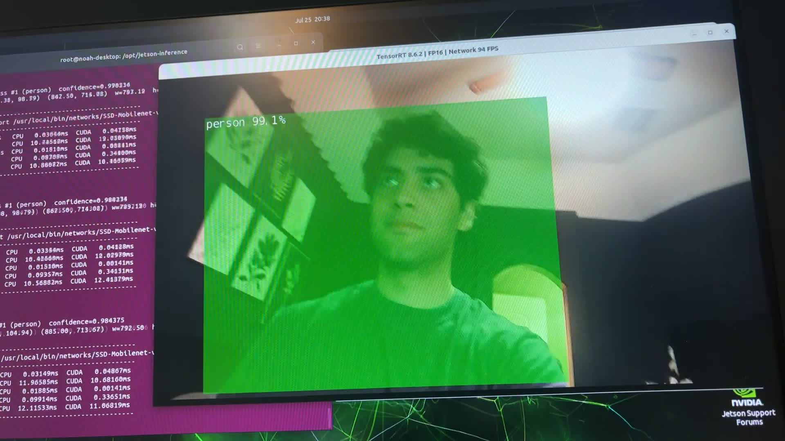
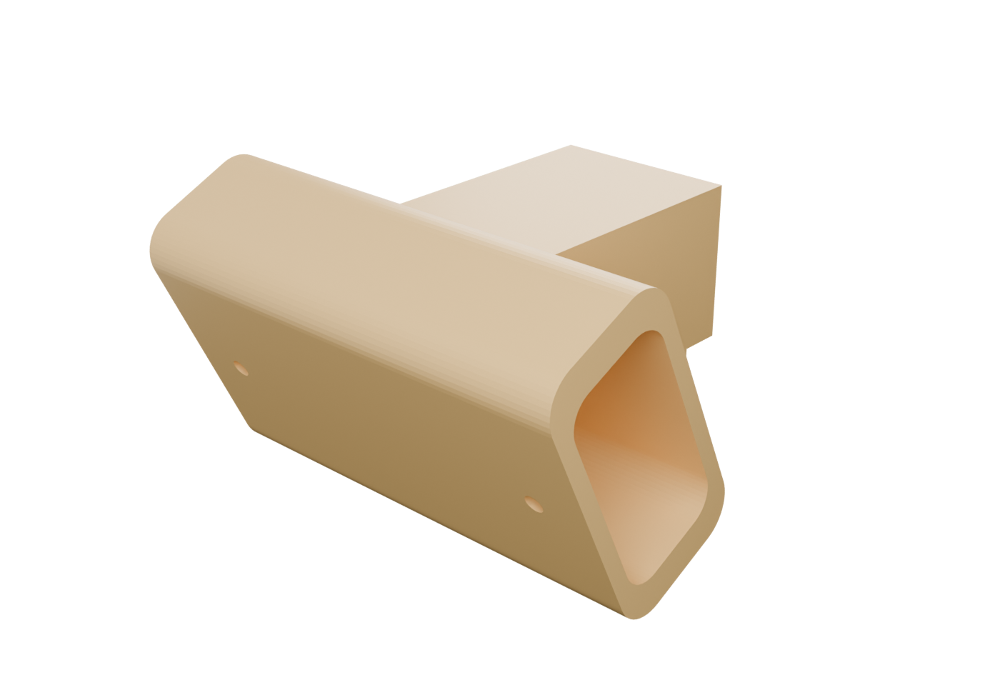

01 · Overview
What this is
TeslaCart turns an ordinary electric golf cart into a self-driving vehicle. Every physical control — steering, throttle, braking, and direction — has been replaced with electronics that a small onboard computer can operate, and the cart drives itself using an AI model trained on real driving demonstrations rather than hand-written rules.
It's a full-stack build spanning custom electronics, embedded firmware, and modern machine learning — done solo, on a student budget, with a human in the driver's seat for every test. Everything is bolt-on and reversible: unplug the intercept harness and unbolt a couple of brackets, and the cart is stock again.

Wide shot of the finished cart — camera rail under the roof, electronics visible.
02 · Hardware
Hardware architecture
Platform
- Vehicle
- 2015 Club Car Precedent i2 — 48 V electric golf cart
- Stock drivetrain
- MCOR4 throttle module → Curtis motor controller
- Retrofit principle
- Full drive-by-wire, with every control manually reversible — T-harness intercepts, no cutting into the stock loom
Compute — a three-layer control stack
The smart computer can't guarantee timing (it runs Linux); the dumb one can. So the deterministic layer sits between the smart layer and anything that can hurt someone, and each layer fails gracefully into the one below it.
The Arduino stays in the loop even under autonomy, so a watchdog can stop the cart independently of the Linux side — lose the heartbeat and it zeroes throttle on its own authority.
Drive-by-wire subsystems
Steering motorized, calibrated, driven live
NEMA 34 closed-loop stepper (12 N·m) with an HBS86H driver, belt-driven to the steering column — 30T→80T HTD-5M, a 2.67:1 reduction (~32 N·m at the column).
Position-controlled over a calibrated ±7000-step
lock-to-lock range; self-centers on release. The closed-loop
encoder reads column angle even in manual driving, and the motor is
backdrivable when disabled — a human can always steer through it.
Throttle road-tested under load
A DS3502 digital potentiometer electrically impersonates the pedal sensor and is swapped in via relays — the motor controller can't tell the difference, and no servo touches the pedal.
Fail-safe by construction: relays de-energized (Arduino off, crashed, or unpowered) reconnects the real pedal. Every command passes through one clamped, slew-rate-limited function.
Braking bench-tested, not yet mounted
A self-locking 12 V linear actuator (330 lb) pulls the brake cable through a tension-only Y-bridle at the cable equalizer, driven by a BTS7960 H-bridge, with a slide potentiometer for continuous brake-position feedback.
Tension-only means the human always wins: press the pedal harder and the cable goes slack; if the cable snaps, the brakes release. Manual during the remote-control phase; part of the model's action space for autonomy.
Forward / Reverse wires located, not yet traced
The cart's direction-select signals are intercepted with relays so direction can be set in firmware — same reversible T-harness pattern as the throttle.
Firmware only ever switches direction at a verified standstill. Harness tracing and relay wiring are still to do — see the build log.
Cameras — 360° vision
- 6× Innomaker U20CAM-1080P USB cameras — 1080p @ 30 fps, MJPEG, native UVC, ~130° diagonal field of view each.
- Surround layout: front-center, two front corners (≈±60°), two rear corners (≈±120°), and rear-center — mounted on PVC rails under the roof lip with cabling routed inside the rail.
- MJPEG compression is what makes six simultaneous USB streams feasible on the available bandwidth. The driving model consumes up to three streams per timestep, selected by driving direction — front cameras going forward, rear cameras in reverse.
- Cameras are powered from the cart through powered USB hubs (fed by a wide-input DC-DC buck converter off the battery busbars), so camera load and heat stay off the Jetson — its port carries data only.
Power distribution
48 V pack → master battery-disconnect switch → main fuse → positive/negative busbars → individually fused branches for the steering driver, camera power, and compute. Separate DC-DC converters isolate the Jetson from the brake actuator, so motor inrush can't brown out the computer mid-drive.

Export of the draw.io system schematic — power distribution plus the Arduino pin map for every subsystem.

Close-up of the Arduino, relays, motor drivers, and busbars.
03 · Software
Software architecture
The model
The driver is a pretrained vision-language-action (VLA) model, fine-tuned on the cart's own driving data — not trained from scratch, and not a hand-coded rule system. The base model, SmolVLA (~450M parameters, from the Hugging Face LeRobot ecosystem), already understands roads, scenes, and obstacles; fine-tuning teaches it this cart's specific controls. For deployment it's exported through ONNX to TensorRT FP16, targeting ≥10 Hz end-to-end on the Jetson.
The autonomy loop
The mapping layer is the exact same code path already used for manual Xbox-controller driving — the model simply replaces the joystick. That means the autonomy stack inherits a control path that has already been proven by hours of human driving.
Safety override layer
A dedicated person/obstacle detector runs alongside the driving model and can override it to force a brake — a hard, deterministic rule sitting above the probabilistic driving policy. It's built on the object detection already running on the Jetson (SSD-MobileNet via TensorRT, validated with live bounding boxes).
Defense in depth: learned model → explicit detector → Arduino watchdog → human safety driver → physical E-stop. No single layer is trusted alone.
How the pieces talk
- Jetson ↔ Arduino: USB serial with a compact
line-based protocol — e.g.
S<steps>for an absolute steering target andT<level>for throttle, streamed ~50×/second. No message for a few hundred milliseconds → throttle goes to zero automatically. - Xbox controller ↔ compute: used for manual driving and data collection — over Bluetooth to the Jetson, or USB to a laptop during bring-up. Stick input is expo-shaped (softer near center) for precise steering.
Training & data collection
- Data is collected by driving the cart manually via the controller. The controller inputs are the training labels — the model learns to reproduce the commands the human issued.
- Each logged record:
timestamp, 6 camera frames, commanded steering / throttle / directionat ~30 Hz, stored in the LeRobot dataset format. Brake logs the actual potentiometer position — continuous feedback, not just the command. - Target: roughly 5–10 hours of clean driving (~20–30 short sessions), including deliberate recovery episodes — drift off-center, then correct — to teach the model how to recover. That's the main defense against distribution shift, extended after deployment with DAgger-style iteration: log interventions, add correction data, re-fine-tune.
- Reverse is left out of the initial action space (rare, low-data, and mixing a discrete flip into continuous control hurts learning) — logged now, added later.

The Jetson running live object detection with real-time bounding boxes.
04 · Build log
Phase by phase
Honest status, phase by phase — what's proven, what's in flight, and what hasn't started. ✅ Complete 🟡 In progress ⬜ Planned
-
July 11–14, 2026
Phase 1 — Throttle drive-by-wire ✅ Complete
Digital-potentiometer throttle intercept of the MCOR module, relay-switched between the real pedal and the computer. Bench-tested, then road-tested on the cart under load — from a 25% crawl to full throttle. Includes a serial watchdog that zeroes throttle on signal loss.
-
July–August 2026
Phase 2 — Steering drive-by-wire ✅ Complete
Closed-loop stepper + belt drive to the steering column. Lock-to-lock calibrated (usable range ±7000 steps). Driven live from an Xbox controller with self-centering, absolute-position steering.
Lock-to-lock steering and self-centering, cart on stands. VIDEO assets/steering-test.mp4Steering test — wheels turning lock-to-lock and self-centering on stands.
-
July 26–30, 2026
Phase 3 — Brake subsystem ✅ Bench-tested 🟡 not yet mounted
Linear-actuator brake with a tension-only cable bridle and continuous position feedback. Full chain bench-tested successfully — extend/retract with variable speed over serial; the self-locking actuator holds position with no holding current. Not yet mounted to the cart or integrated into the control loop — manual during the RC phase by design.
Brake actuator bench test — variable-speed control over serial. VIDEO assets/brake-bench.mp4Brake actuator bench test — variable-speed extend/retract under serial control.
-
July 2026
Phase 4 — Compute bring-up ✅ Complete
Jetson Orin Nano set up on JetPack 6.2.1, root filesystem migrated from microSD to the NVMe SSD, and live object detection running via TensorRT (SSD-MobileNet with real-time bounding boxes) — proving the capture → neural net → render loop the driving model will use.
-
August 2026
Phase 5 — Manual controller driving ✅ Complete (throttle + steering)
Xbox-controller drive integrating throttle + steering through one firmware path — absolute-position steering on the left stick with expo-shaped sensitivity, gradual throttle on the right trigger, streamed at ~50 Hz with a fail-safe that zeroes throttle if the link drops. Reverse is not yet part of this — see Phase 7.
Controller-driven test on the ground. VIDEO assets/drive-test.mp4Full controller-drive clip on the ground — throttle + steering from the Xbox controller.
-
August 2026
Phase 6 — Power distribution 🟡 In progress
Master disconnect switch and busbars ordered; main + branch fusing planned. Wiring the trunk — switch → fuse → busbars → branches — is pending parts arrival.
-
August 2026
Phase 7 — Forward / Reverse 🟡 In progress
Direction-select wires located on the cart. Still to do: meter-test the 3-wire harness (identify forward/reverse/common and signal polarity), wire the two relays, and add reverse to firmware. Uses existing relay channels and Arduino pins — no new hardware.
-
August 2026
Phase 8 — Camera subsystem 🟡 In progress
Six-camera 360° rig decided and ordered — cameras, powered hubs, buck converter. Mounts (printed housings on PVC rails) are designed but not yet built, waiting on parts to measure and CAD. Six-simultaneous-stream validation has not yet been run — that's the gating test before mounts and cable lengths are finalized.

Camera housing / rail mount, designed in Fusion 360. IMAGE assets/camera-mount-cad.pngCAD render of the camera housing / rail mount.
-
Upcoming
Phase 9 — Autonomy (VLA training) ⬜ Planned
Not started. Depends on hardware-complete — drives on the controller with all six cameras streaming reliably — so that data collection can begin. Plan: fine-tune a pretrained VLA on RC-collected driving data, then layer in the safety override.
05 · Roadmap